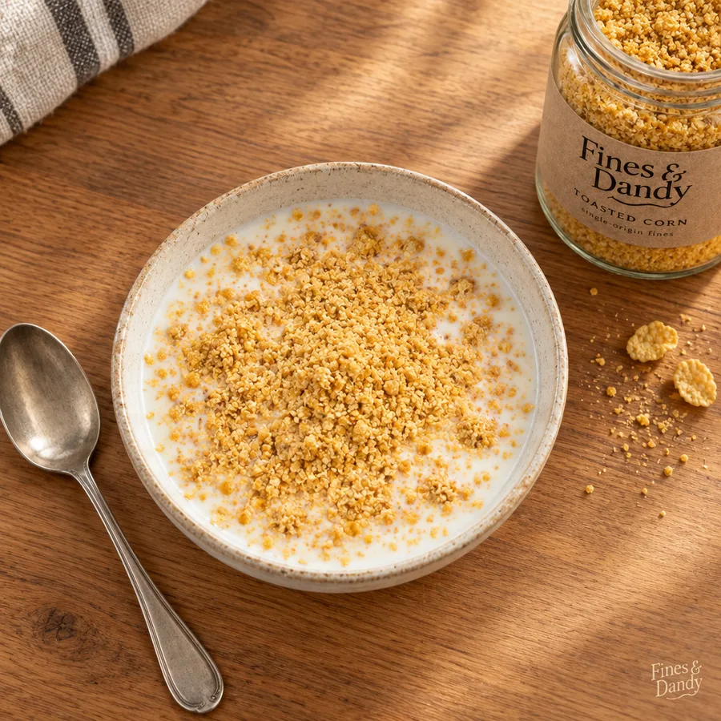
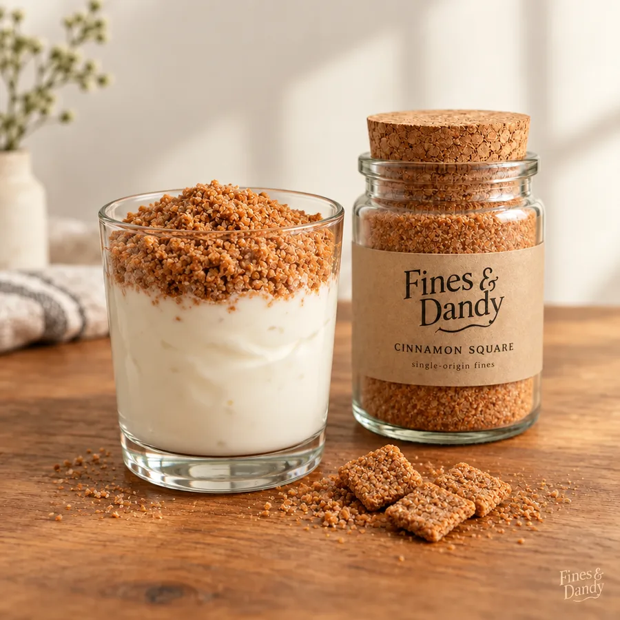
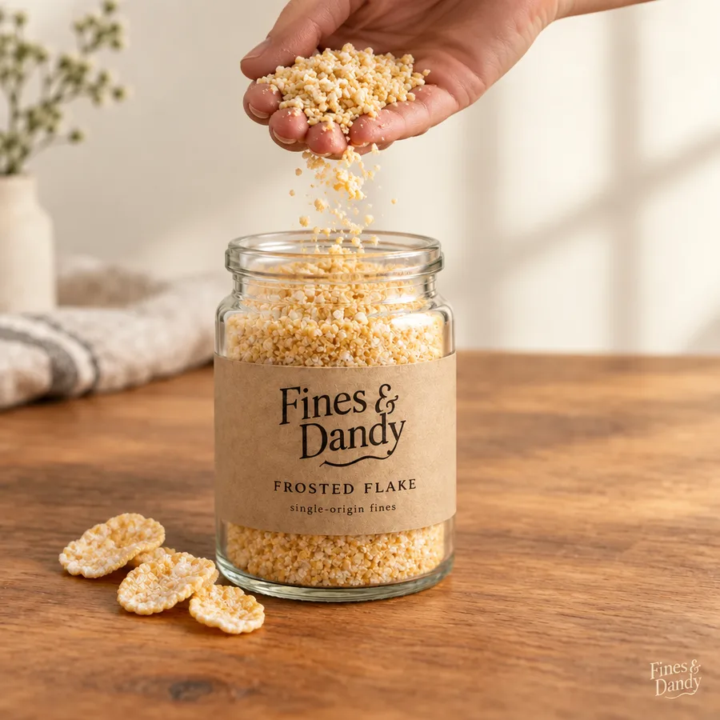

Pairings & Recipes
Developed in the Fines & Dandy test kitchen over several long mornings. Each recipe has been tasted, approved, and swept up.

The Bowl
The classic preparation, restored to its essential form.
- Pour cold milk into a bowl. The milk goes first. This is the whole insight.
- Rain two generous spoonfuls of Toasted Corn fines over the surface.
- Watch the settle. Do not stir. Stirring is for people in a hurry.
- Eat with a spoon, or drink it like a professional.
"Every bowl of cereal was always ending up here. We just skip ahead."

The Topper
Plain yogurt is a blank page. Write something cinnamon on it.
- Spoon plain or vanilla yogurt into a glass you're proud of.
- Cap it with a quarter inch of Cinnamon Square fines. Yes, a quarter inch.
- Resist smoothing the layer. The dunes are part of it.
- Serve immediately, before someone asks for their own.

Dry, By the Handful
The purist's preparation. No dairy, no dishes, no witnesses.
- Open the jar. We recommend Frosted Flake for this format.
- Pour a modest measure into a cupped palm.
- Tip the palm. Commit fully. Half measures end up on the floor.
- Return the jar to the shelf as if nothing happened.
The Restorer
For those who miss finding dust at the bottom of the bag, we offer this advanced technique.
- Buy an ordinary bag of cereal from an ordinary store.
- Open it, and pour one full jar of matching Fines & Dandy fines directly in.
- Seal, and store as usual for three weeks. Shake gently whenever you remember.
- The bag now finishes the way a bag should: with sediment. You're welcome.
"It's about the journey ending correctly."
Test kitchen notes
All recipes were developed using standard jars at room temperature. Chilled fines settle 11 percent faster, a figure we measured and have chosen to publish.
For events, weddings, or cereal bars, our wholesale team can discuss volume. See wholesale sweepings.